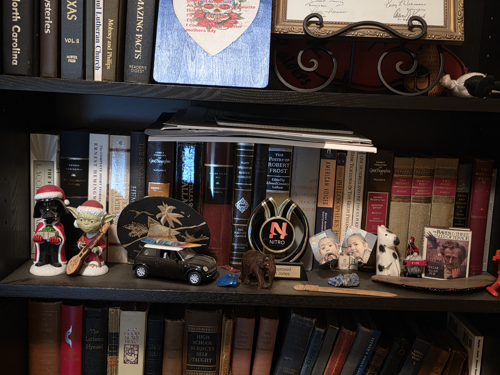
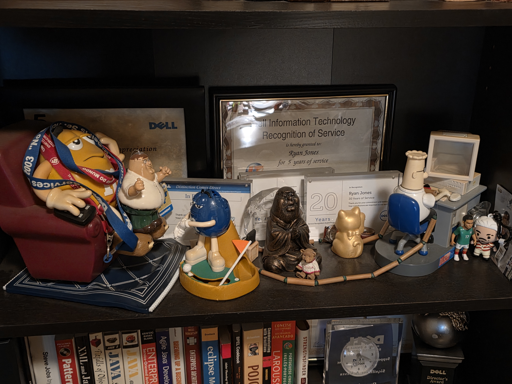
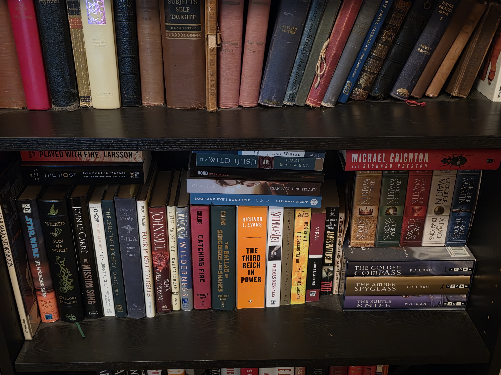
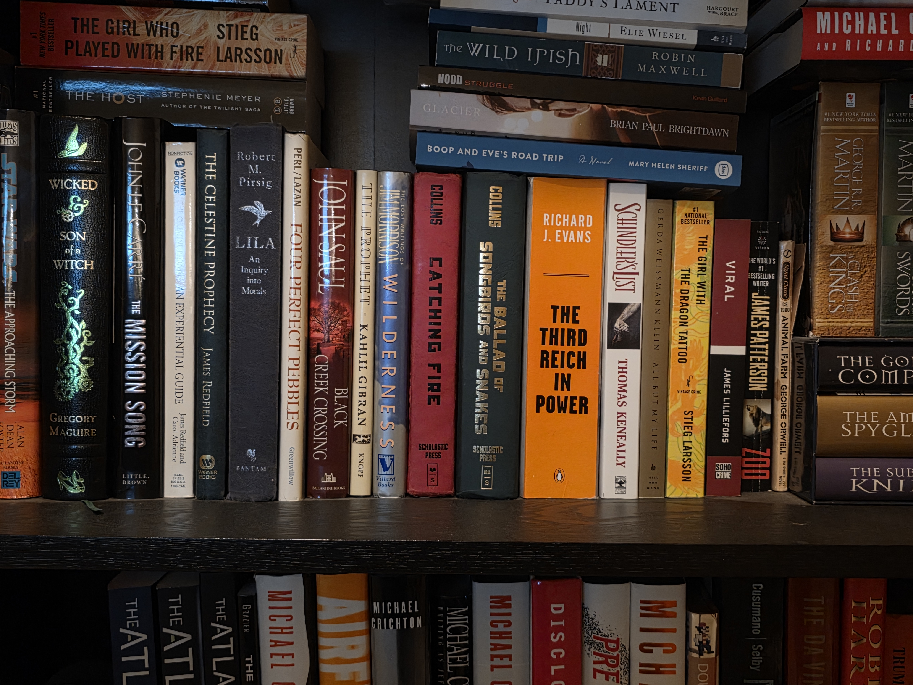
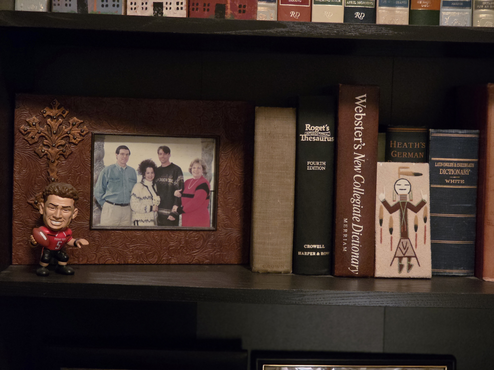
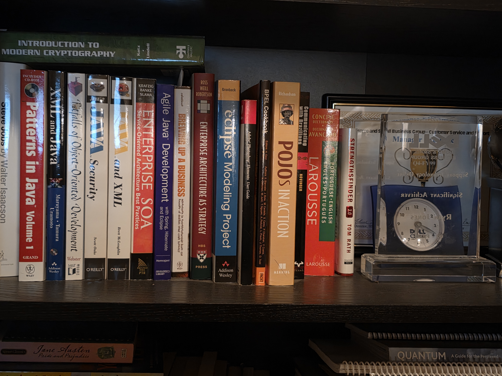

My Collection
This is my collection of work and personal items I've collected over the years. It includes items I had in my cubicle before that was replaced in favor of shared space, as well as personal items and books for both work and pleasure.
Cubicle Trinkets
Various items collected over the years.

These are various small items I collected over the years while working in my cubicle. They include trinkets, knick-knacks, and other little things that held some personal significance to me. Now that my cubicle has been replaced with shared space, these items serve as a reminder of that time and place.

More Cubicle Items
More items collected and some awards
This photo shows more items from my cubicle, including some awards I received over the years.

Personal Books
These are books that I've read for pleasure
These are books that I've read for pleasure over the years. They include a variety of genres and topics that have interested me at different times. This collection represents some of the reading material that has provided me with enjoyment and insight.

Additional Personal Books
More books that I've read for pleasure
These are additional books that I've read for pleasure over the years. They continue to represent the variety of genres and topics that have interested me at different times. This collection further illustrates the reading material that has provided me with enjoyment and insight.

Personal Items
Items that are personal to me
These are items that are personal to me and hold special significance. They represent different aspects of my life and interests, and each item has a unique story or meaning to me.

Work Related Books
These are books related to my work and professional development
These are mostly Java development related books, but also include some design and general professional development books.